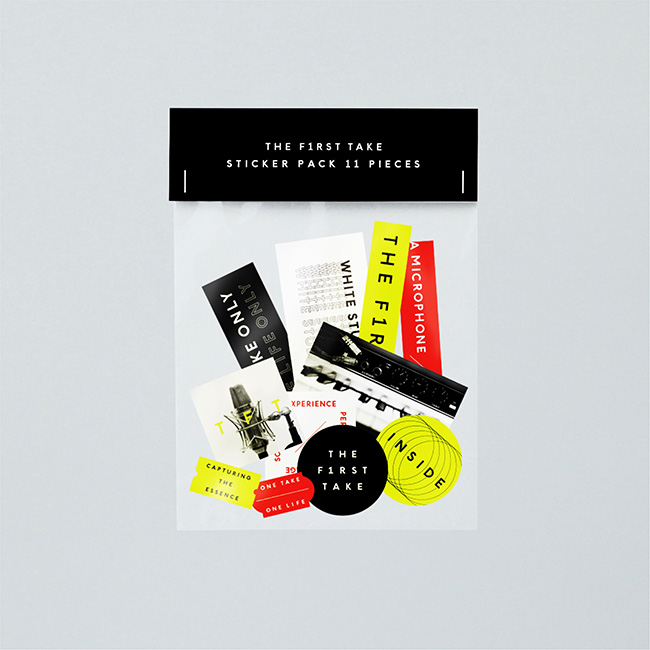
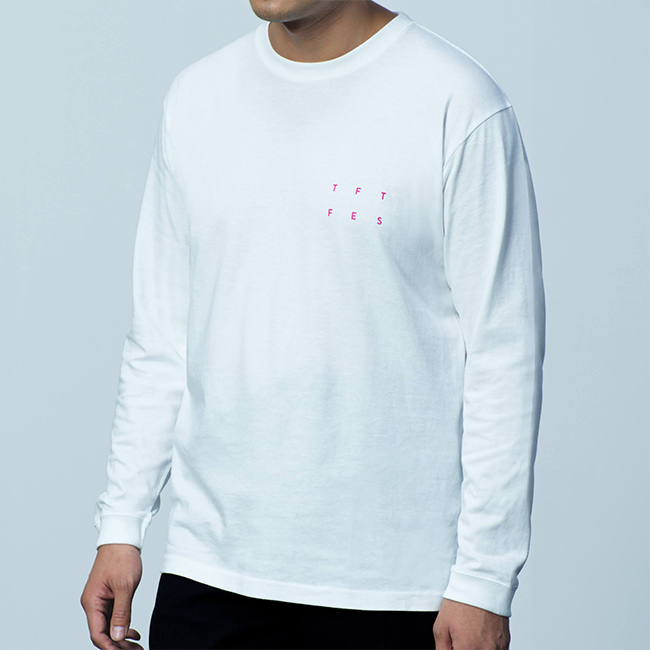
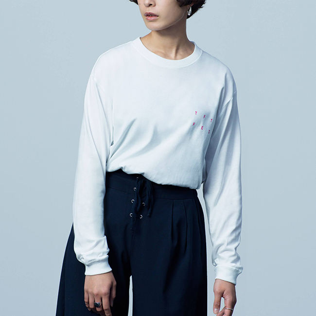
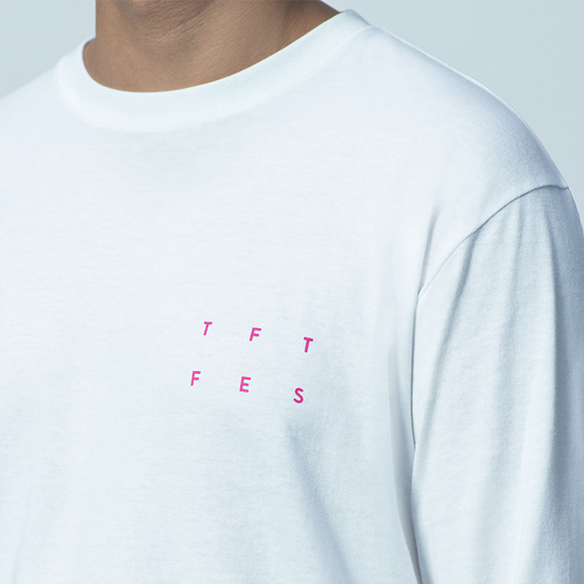
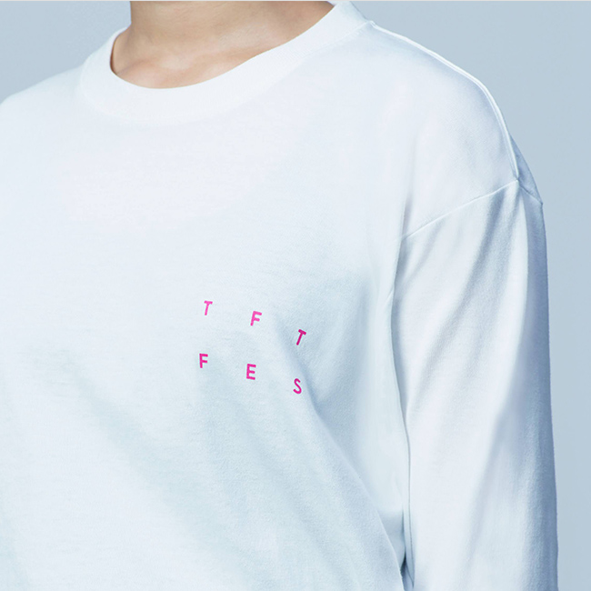
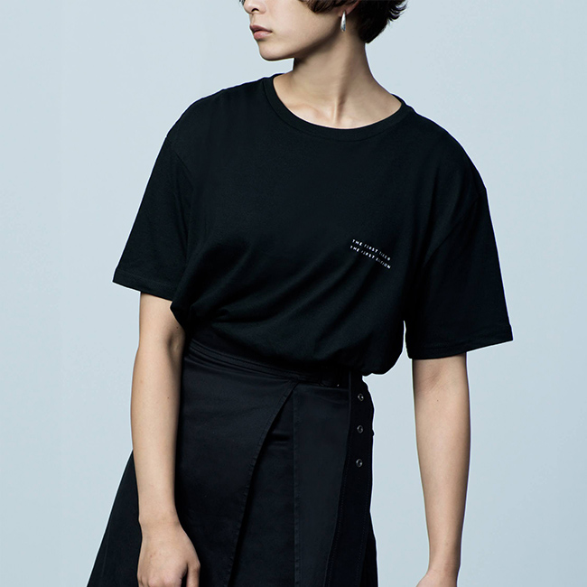
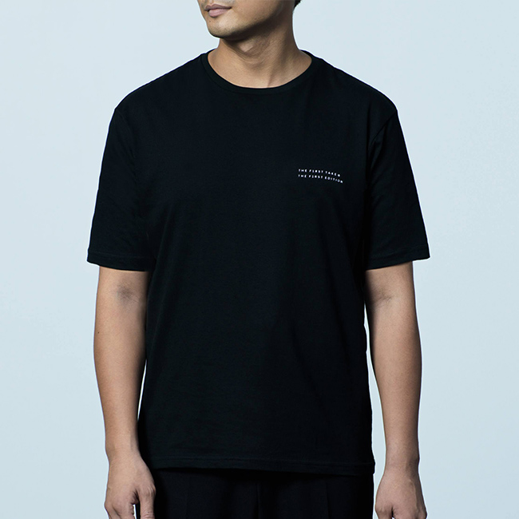
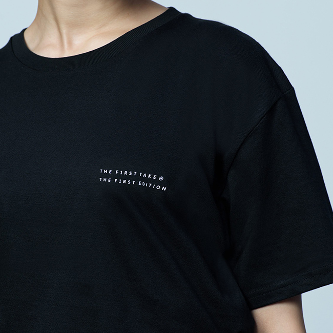
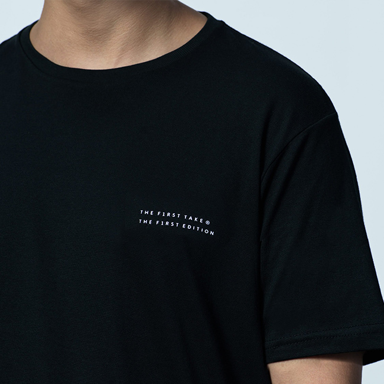

大阪発、青春文學ロックバンド。2005年結成。
日本語の響き、美しさを大切にした文學的な歌詞やヴォーカル、その世界を彩る緻密に計算されたアレンジ。スリーピースの限界に常に挑戦しているバンド。
2016年3月、EPICレコードジャパンからメジャーデビュー。これまで「ハイキュー!!」、「Dr.STONE」、「銀魂」など人気アニメの主題歌を担当し、国内外で愛されている。
また2020年にはアーティストVtuberをプロデュースし、リアルとデジタル両方で活躍する唯一無二のアーティストとして活動中。
今年6月23日に約2年半ぶりのフルアルバム「TOKYO」をリリースし、今後はグローバルを目指して積極的に活動予定。


White Studio
Big T-shirt [BLACK]¥3,500（税込）

INSIDE Long sleeve
Big T-shirt [WHITE]¥4,500（税込）

INSIDE Program Book
¥1,000（税込）

TFT Color Key Ring
¥800（税込）
 TFT Sticker Pack
11 Pieces¥900（税込）

THE FIRST TAKE
Photo Print
Long Sleeve T-Shirt [WHITE]¥4,200（税込）
THE FIRST TAKE
Photo Print
Long Sleeve T-Shirt [WHITE]¥4,200（税込）
THE FIRST TAKEのDIRECTOR OF PHOTOGRAPHYであるフォトグラファーの長山一樹が撮影したフォトプリントTシャツ。ビンテージのローズ・ピアノを撮り下ろした写真が背面にプリントされています。
袖に適度なリブ(1.6インチ)が付いたロングスリーブTシャツ。丁度よい生地厚で、オールマイティに重宝します。季節を問わず1枚着でも、インナーとしても着回しできます。セミコーマ糸を使用し、なめらかな質感と耐久性を実現しています。
男性モデル 185cmでXLサイズ着用
女性モデル 170cmでLサイズ着用
     THE FIRST TAKE FES
LOGO T-Shirt[Black]¥3,500（税込）
THE FIRST TAKE FES
LOGO T-Shirt[BLACK]¥3,500（税込）
THE FIRST TAKEのLOGO Tシャツ。ブラックのTシャツのボディの背中にブラックインクでロゴがさりげなくプリントされています。
Tシャツボディは身幅を大きくとったビッグシルエットが特徴。着丈を抑えることで野暮ったさを軽減し、スッキリとした印象に。肩のラインも落とし、袖も肘にかかるライン。首元のリブには、耐久性の高いダブルステッチを採用しました。セミコーマ糸を使用し、なめらかな質感と耐久性を実現しています。
男性モデル 185cmでLサイズ着用
女性モデル 170cmでMサイズ着用 

  
THE FIRST TAKE
Sticker Set¥900（税込）